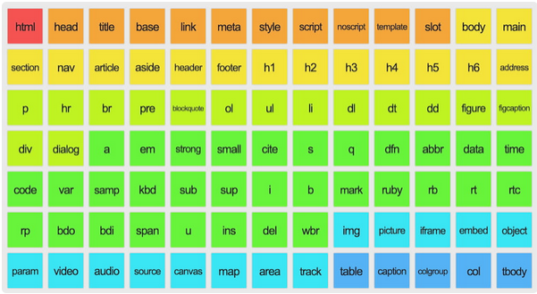

HTML significa Lenguaje de Marcas de Hipertexto, del inglés HyperText Markup Language.
Está constituido por tags o etiquetas que son las que muestran todo el contenido, es como el esqueleto.
TABLA PERIODICA DE LOS ELEMENTOS HTML

<!DOCTYPE html> El elemento HTML (o elemento HTML raiz)
representa la raiz de un documento HTML. El resto de elementos descienden de este elemento. <html lang="es"> Tema de lenguaje, no ha de ir en metadatos sino
abajo de la etiqueta HTML
MetaDatos del Documento ➡️(7)➡️ | <head> |
<meta charset="UTF-8"> |
<meta name="viewport" content="width=device-width, initial-scale=1.0"/> |
<title>BLA,BLA,BLA</title> |
<meta name="description" content="resumen"> |
<link rel="icon" href="https:.....png" sizes="95x95"/> |
<script src="script.js"></script> | </head>
|
Ninguna que se marque como meta va con /, en la sección meta no
solo van datos meta sino otros.
<head> Inicia el encabezado del documento
<meta charset="UTF-8"> Tema de control decodificación de
caracteres
<meta name="viewport" content="width=device-width, initial-scale=1.0"/> Temas de renderización a diversos dispositivos
<title>BLA,BLA,BLA</title> El titulo que se mostrará en la
pestaña y buscadores, entre 55 y 65 caracteres, tambien influye en el posicionamiento la unica que se ve
en barra titulo
<meta name="description" content="resumen"> Potencializa el
posicionamiento el description entre 150 y 165 palabras, si se tiene secciones dentro del proyecto cada
sección con su descripción
<link rel="icon" href="https:.....png" sizes="95x95"/> El
favicon es el icono que se muestra en la pag, en la pestaña
<link rel="stylesheet" href="styles.css"> Este enlace carga un
archivo CSS para aplicar estilos a la página
<script src="script.js"></script> Esta referencia carga un
archivo de script JavaScript
</head> Cierre de cabecera
Seccionamiento del contenido - Semántica - ➡️(9)➡️
| <adres>
| <article>
| <aside>
| <footer> | <header>
| <h1> a <h6> | <main>
| <nav> | <section> |
Dividir y organizar el contenido de una página web en
secciones lógicas y significativas utilizando etiquetas HTML apropiadas. TEMA MUY CONEXO A MAQUETACIÓN
<adres> Aporta información de contact o direcciones. <article> Pedazo de codigo a reutilizar. Sección autocontenida.
<aside> Sección de una página que consiste en contenido que está
indirectamente
relacionado con el contenido principal del documento. Contenido secundario. <footer> Pie de página para el contenido de sección más cercano o el
elemento
raíz de sección. <header> grupo de ayudas introductorias o de navegación. Cabeceras
<h1>,<h2><h3>,<h4>,<h5>,<h6>
Encabezados
deja titularizar. Los niveles con jerarquias. Tambien CO Un solo. Solo 1 H1 <h1>.
<main> contenido principal del <body> de un documento o
aplicación, SOLO 1
MAIN <nav> Sección con enlaces de navegación, internos o externos.
<section> Representa una sección genérica de un documento. Muy
parecido al
<div> pero en menor nivel
Contenido del texto ➡️(14)➡️
| <dl>
| <dt>
| <dd>
| <blockquote>
| <div>
| <figure>
| <figcaption>
| <hr>
| <li>
| <menu>
| <ul>
| <ol>
| <p>
| <pre>
|
Para organizar bloques o secciones de contenido
<dl> Es una definición esta asociado con una lista descriptiva se
relaciona dd.
GLOSARIO DE TÉRMINOS. 3 etiquetas. dt para definir el termino, dd la definición del dato
dl
Término 1 dt
Definición del termino 1 dd
Término 2 dt
Definición del término 2 dd
<dt> Término en una descripción o lista de definiciones Definición
Term.
<dd> Provee detalles acerca de o la definición de un término
precedente en dt
(tabula) Definición description <blockquote> Citas en bloque se ven como cita, combinar con cite
genera todo ese
contenido <div> Secciones o contenidos, etiqueta por excelencia, genera
saltos de linea.
VER SPAN <figure> Marco de una figura, incluye origen, tamaño, texto
alternativo, etc.
Para poner el caption figcaption dentro del tag <figcaption> Subtitulo de una figura. <hr> Línea horizontal salto semantico de contenido <li> Lista la etiqueta de cierre opcional <menu> Lista desordenada de elementos con elementos li, muy
parecido a ul <ul> UNorderd List - Lista no ordenada, lleva puntos. con type te
das tipos de
viñeta, scuare, circle. Title un cuadradito con el nomnbre <ol> “Ordered List” - Lista Ordenada , siemrpe van dentro los tag
li, start para
poner No inicio, reversed para alrevez, con type muestra el tipo de num <p> Parrafo. Texto en forma de parrafo, margenes. <pre> Permite escribir en linea desde el editor, cambia la letra
Semántica del texto en línea ➡️(29)➡️
| <a>
| <abbr>
| <b>
| <bdi>
| <bdo>
| <br>
| <cite>
| <code>
| <data>
| <dfn>
| <em>
| <i>
| <kbd>
| <mark>
| <q>
| <rp👁️🗨️>
| <rt>
| <ruby>
| <s>
| <samp>
| <small>
| <span>
| <strong>
| <sub>
| <sup>
| <time>
| <u>
| <var>
| <wbr>
|
significado, estructura, o el estilo de una palabra, una línea o cualquier pieza arbitraria de texto.
<a> enlaces a otras pags href para el source para abrir en nueva
pestaña < a href=" bbbb"=> , con target ="_blank", rel="nofollow" para sitios no relacionados, si dentro
dejas una
img te hace la img como hipervinculo.
Para hacer navegación interna, emoji 😉 o texto. tabla para asociar los items a a donde ir se debe dar
nombre como id, no agenos al ingles ni espacios a href = "lugar#ADondeVa".
con css agregado al html scroll-behavior: smooth hace que se vea más fluido el desplazamiento y no como si
apareciera. Con mailto: , o whatsapp tel:
<abbr> abrebiaciones <b> Negrita NEGRITA ASÍ <bdi> Muestra en tipo código pero tener presente que <bdo> Secciones o contenidos <br> Salto de linea. UN SOLO TAG, NO NECESITA CIERRE <cite> Secciones o contenidos <code> mostrar en formato de codigo <data> Secciones o contenidos <dfn> Secciones o contenidos <em> enfasis texto que hace enfasis. <i> cursiva cursiva <kbd> Secciones o contenidos <mark> Resalta ASI <q> cita <rp👁️🗨️> Secciones o contenidos <rt> Secciones o contenidos <ruby> Secciones o contenidos <s> Secciones o contenidos <samp> Secciones o contenidos <small> Letra pequeña <span> Secciones de bloque genererico en linea. Solo ocupa el
espacio de su
contenido VER DIV <strong> enfasis, entonación etiqueta semantica <sub> subindice <sup> potencias H2O <time> periodo de tiempo <u> Subrayado pero se recomienda más con scc <var> Secciones o contenidos <wbr> Secciones o contenidos
<area> ??????????????? <audio> Por medio del atributo source se da la ruta pero debe tener
el atributo controls para mostrarse. Autoplay
necesita permiso para que se reproduzca solo. Loop
para volver a reproducir. muted silenciado, preloaded va a empezar a precargar para reproducir más
rápido <audio src="./audio.mp3" controls preload > </audio > preload >
<img> en un solo tag < img
src=" alt=texto descriptivo acepta formartos png, svg, etc. Los estilos recomendado desde CSS <map> ??????????????? <track> ??????????????? <video> Por medio del atributo source se da la ruta pero debe tener el atributo controls para mostrarse. Autoplay necesita permiso para que se reproduzca solo. Loop para volver a reproducir. muted silenciado, preloaded va a empezar a precargar para reproducir más
rápido <video src="./video.mp4" controls preload poster="./ARREGLAR POR CSS"> </video >
<embed> plug-in <iframe> Un marco, ingresa otra pag en el navegador, youtube, pdfs,
etc, no casi redes sociales
<object> Para incrustar tipos de objeto, como pdf, video, etc
<picture> EXPERIMENTAL. Contenedor de múltiples elementos.
<portal> Habilita incrustar htmls en otra pag <source> recursos multimedia <picture>,
<audio> o <video>
SVG and MathML ➡️(2)➡️
| <svg>
| <math>
|
<svg> Para agregar gráficos de vector <math> Secciones o Temas con cálculos y matemáticas.
<math> es la que engloba
<canvas> dibujar gráficos por secuencias <noscript> Lo que no es script <script> incrustar código ejecutable, puede ser js, se puede
escribir como js en html mientras tengas la etiqueta script o por medio de enlazar html y js. apertura y
cierre script src=/source
Ediciones demarcadas ➡️(2)➡️
| <del>
| <ins>
|
<del> elemento eliminado en en cursiva sale <ins> Elemento ingresado en subrayado sale
<caption> Se utiliza para agregar un titulo a la tabla puede estar
aariba o abajo segun el style se defina. <col> Define propiedades de estilo y da la col <colgrup> Agrupa una o mas columnas <table> Tag que contiene la tabla <tbody> agrupa una tabla en su cuerpo <td> Celdas <tfoot> Pie de pagina de la tabla. <th> Encabezado de la columna <thead> Encabezados de columna o fila en la table <tr> Fila en la table
<button> Un boton <datalist> Contiene elementos, opciones <fielset> Ordenar los grupos de campo de un formulario, crea una caja
de formulario en bloque<form> la que contiene controles activos <input> Controles interactivos de formulario. < imput así:
text
checkbox
radio
date
submit
search
reset
file
email
color
password
range
button <label> La etiqueta, el "nombre" <legend> Crea títulos para grupos de campos. Caja con titulo.
<meter> escala dentro de un rango <optgroup> agrupación <select><option> item dentro de un <select><output> puede inyectar resultados de cálculos <progress> muestra progreso de una tarea <select> menu de opciones las opciones están dentro de
<option> que generalmente se agrupan en <optgroup><textarea> Edición multilineal de texto sin formato
Elementos Interactivos ➡️(3)➡️
| <details>
| <dialog>
| <summary>
|
<details> Envuelve el acordeon <dialog> Como tipo de caja de dialogo <summary> Titulo del acordeón se agrega otro tag para el contenido
Componentes WEB ➡️(2)➡️
| <slot>
| <template>
|
tecnología relacionada con HTML que hacen que sea posible, en esencia, crear y personalizar elementos
como si fueran HTML normal.
<slot> placeholder en un componente que tu puedes llenar con tu
propio marcado,
<Template> mecanismo para mantener el contenido HTML del lado del cliente
que no se renderiza cuando se carga una página, pero que posteriormente puede ser instanciado
Styles CSS en HTML 3 formas XXXXXXXXXXX
dando atributos onclick="Alert" No muy recomendable En head se abre etiqueta style LIBRERíAS se van marcando etiquetas por etiquetas pero
marca
todas las etiquetas Mediante hoja CSS Se enlaza en el head con tag link rel = "stylesheets" href="./DIR"
Eventos
dando atributos al tag style= style = " color fondo, color letra, tamaño, tipo, fuente,
alineación, espaciado, margen, para tags como NO MANERA MÁS EFICIENTE " En head se abre etiqueta style LIBRERÍAS se van marcando etiquetas por etiquetas pero marca
todas las etiquetas Mediante hoja CSS se enlaza en el head con tag link rel = "stylesheets" href="./DIR"